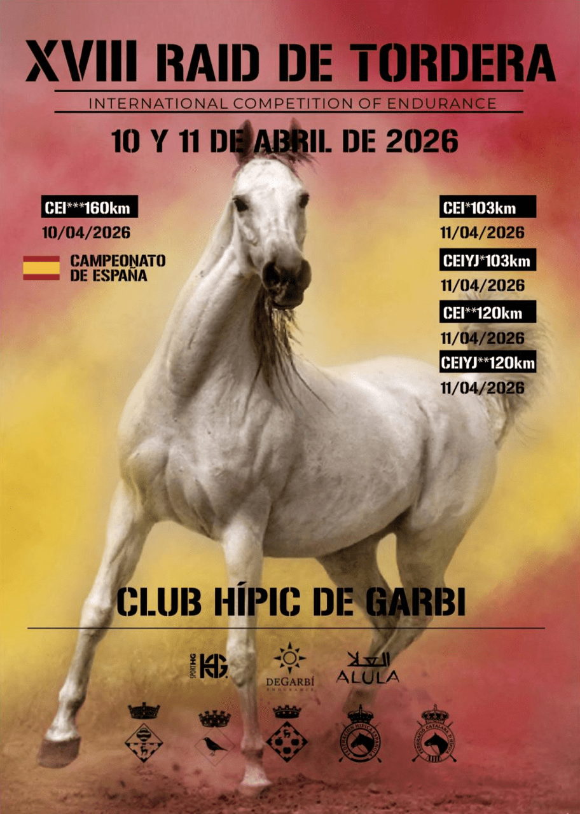

La organización renuncia y la RFHE busca nueva sede para el Campeonato de España de Raid 2026
La Real Federación Hípica Española ha confirmado que la organización concesionaria del Campeonato de España Interautonomías de Raid 2026 le ha trasladado "su imposibilidad de llevarlo a cabo". La federación ha hecho público el contratiempo este martes a través de un comunicado oficial y abre ahora un proceso exprés…

Foto: rfhe.com
La Real Federación Hípica Española ha confirmado que la organización concesionaria del Campeonato de España Interautonomías de Raid 2026 le ha trasladado "su imposibilidad de llevarlo a cabo". La federación ha hecho público el contratiempo este martes a través de un comunicado oficial y abre ahora un proceso exprés para tratar de salvar la prueba dentro de las fechas previstas.
Como primera medida, la RFHE se ha dirigido a las dos organizaciones que ya habían presentado candidatura en el proceso anterior, ofreciéndoles la posibilidad de hacerse cargo del campeonato. El plazo para confirmar el interés es de apenas 48 horas, es decir, hasta el próximo 29 de mayo. Si ninguna de las dos acepta, la federación abrirá un nuevo periodo de candidaturas y será la Junta Directiva la que eleve una propuesta definitiva.
La situación deja en el aire una de las citas más importantes del calendario nacional del raid, que reúne a las distintas selecciones autonómicas y funciona como referencia para la proyección hacia el equipo nacional. La decisión llega además en un curso especialmente sensible para la disciplina, marcado por la preparación del Mundial de Raid 2026 que la propia FEI ha reactivado tras meses de dudas.
La federación insiste en que su prioridad es respetar las fechas inicialmente fijadas y dar continuidad al campeonato, aunque reconoce que el margen es estrecho. En los próximos días deberá quedar claro si el Interautonomías sobrevive in extremis con una nueva sede o si será necesario buscar fórmulas alternativas que garanticen el reparto de títulos nacionales en raid esta temporada.
— Redacción de Hípica al Día